Contact Us
Explore how Diya ensures patient understanding wherever care happens
AI translation embedded across workflows. Governed by Diya Safe AI™. Built to scale

Most health systems still rely on a slow, manual language translation model
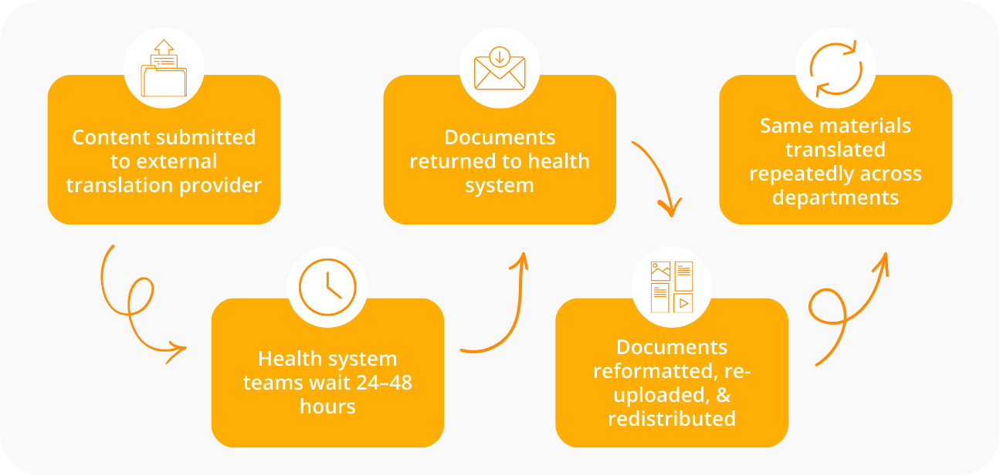
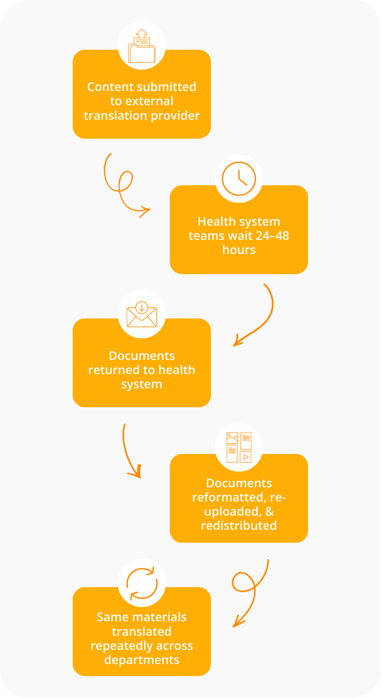
This approach creates real consequences:
Delays in care when forms, instructions, or messages aren't available in time
Inconsistent patient understanding across visits & care settings
Risky workarounds as staff translate informally under pressure
Compliance exposure due to limited visibility & auditability
High operational burden & cost driven by repeated manual processes
Translation exists — but it isn't functioning as part of care delivery
Healthcare translation should not live separately. Diya delivers language translation directly inside clinical and operational workflows
Secure patient messages
Intake, consent, & assessment forms
Discharge instructions & after-visit summaries
Clinical & administrative documents
Patient education materials
Video & multimedia content
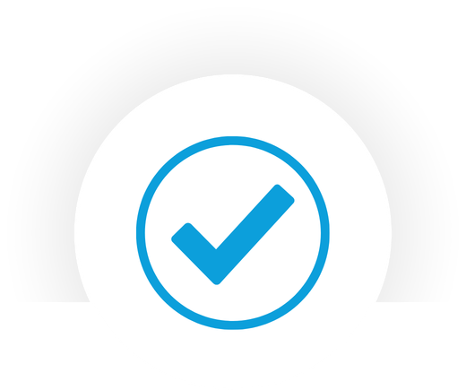
Translation becomes a built-in capability — available at the point of care
Lessens rework
Eliminates handoffs
Minimizes manual coordination
Healthcare-grade translation requires:
Consistency across patient-facing & clinical content
Context awareness, including medical terminology & care intent
Clear governance & auditability
Safe use within regulated healthcare environments
Diya is designed to meet these requirements while minimizing additional risk or burden
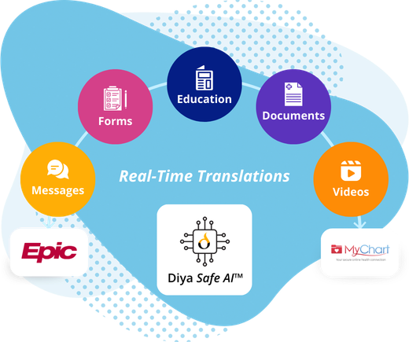
Diya's AI translator is purpose-built for healthcare

EHR-embedded
Integrated in Epic & other major EHRs
Enterprise AI governance
Centralized controls & oversight
Secure by design
Aligned with healthcare security standards
Reliability at scale
Across departments & sites
When AI translation is embedded into clinical workflows, the impact is immediate and measurable
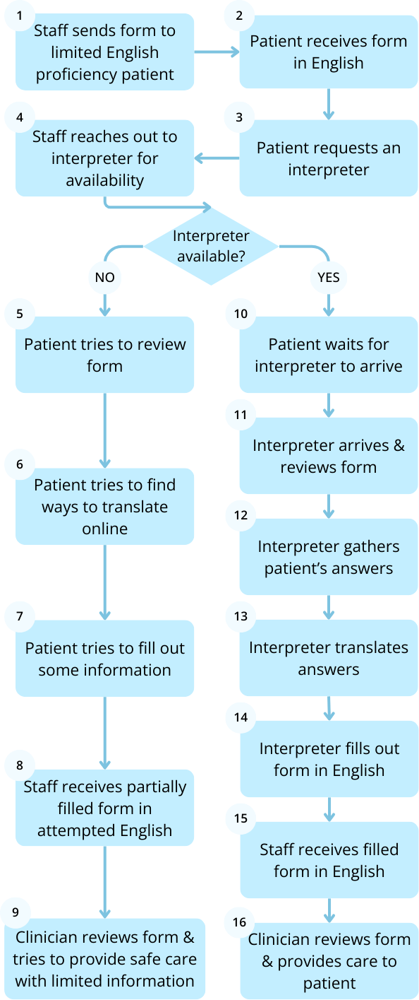
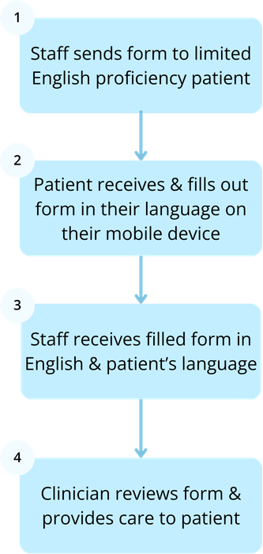
95%
4.5/5
45
Diya supports Section 1557 requirements by enabling:
Real-time translation for appropriate, low-risk content
Qualified human-in-the-loop review for complex, sensitive, or high-risk materials
Clear accountability & auditability across translated content
Diya works with health systems to align translation workflows with compliance, clinical risk, & operational needs.
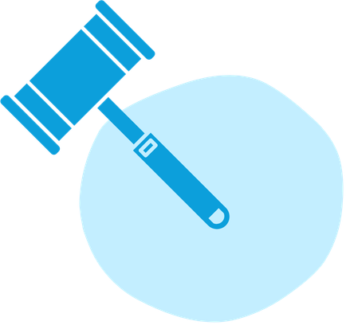
Translation interactions run through Diya Safe AI™
The Diya Safe AI™ framework provides:
Audit trails & usage reporting
Controls for review & quality oversight
Secure handling of clinical & patient data
Alignment with healthcare privacy & governance standards
Diya's AI translation supports communication across departments, encounters, and points of care
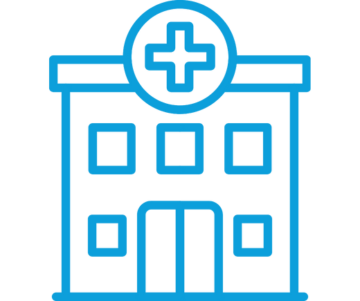
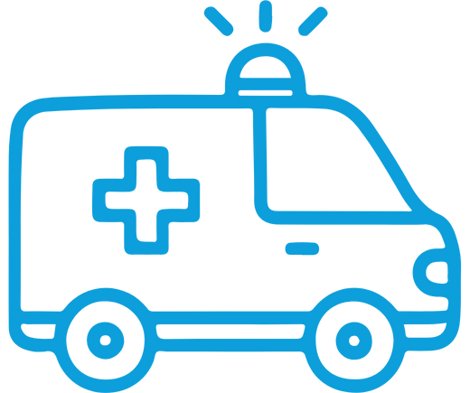
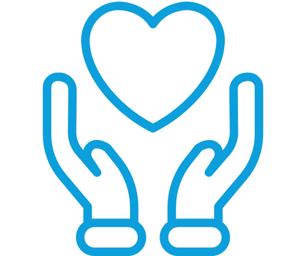
Adoption does not require replacing every workflow at once. Our phased approach enables safe, controlled deployment
Identify where translation delays create the most risk
Map high-impact workflows
Determine where real-time vs. reviewed translation is appropriate
Get started with one high-impact use case
Explore how Diya ensures patient understanding wherever care happens